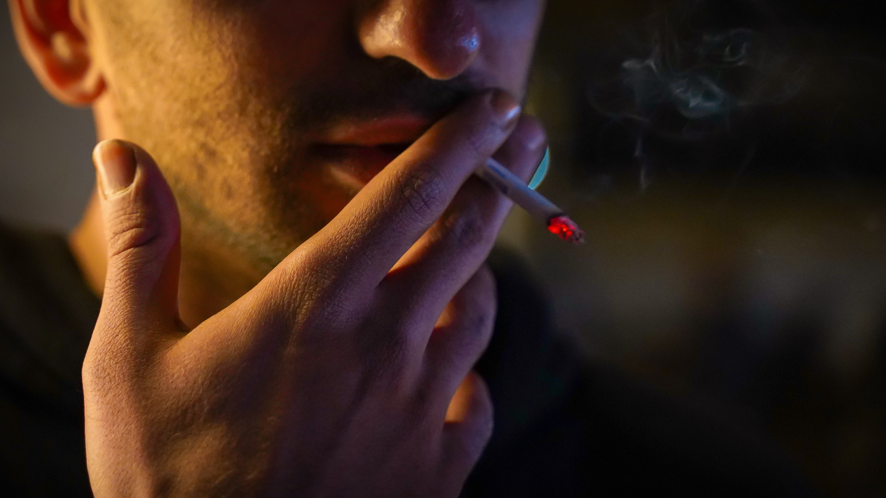

1. Курение
Курение является социальной проблемой общества, как для его курящей, так
и для некурящей части. Для первой – проблемой является бросить курить, для второй – избежать
влияния курящего общества и не «заразиться» их привычкой, а также – сохранить своё здоровье от
продуктов курения, поскольку вещества входящие в выдыхаемый курильщиками дым, не на много
безопаснее того, если бы человек сам курил.

Последствия курения для организма:
Тепло – это единственный физический агент курения – первым
начинает
разрушительное действие на организм. Горячий дым в первую очередь воздействует на зубную
эмаль, со временем на
ней появляются микроскопические трещины – ворота для болезнетворных микробов, в результате
их
жизнедеятельности вещество зуба начинает разрушаться раньше и быстрее, чем у некурящих
людей. На
зубах оседает деготь, и они темнеют, появляется специфический запах.
Дым оказывает влияние на слизистые оболочки рта и носоглотки.
Капиллярные сосуды расширяются,
слизистая оболочка щек, неба, десен, подвергаясь хроническому раздражению, воспаляется.
Голосовые связки приходят в состояние хронического воспаления,
они утолщаются, становятся
более грубыми, что ведет к изменению тембра голоса.
Табачный дым отрицательно влияет на функцию органов дыхания.
Ухудшается проходимость бронхов,
особенно мелких и мельчайших, снижается эластичность лёгочной ткани, интенсивность снабжения
тканей кислородом. Токсические вещества табачного дыма подавляют активность альвеолярных
макрофагов, что приводит к снижению активности местных иммунных факторов и развитию
хронических
инфекционно-воспалительных процессов. При вдыхании дыма в лёгкие попадают также
канцерогенные
вещества, способствующие развитию рака лёгких.
В больших дозах никотин вызывает угнетение дыхательного центра.
Одна выкуренная сигарета вызывает генерализованный спазм всех
сосудов на 40 минут. Спазм
сосудов, перерождение их внутренней оболочки, формирование тромбов приводят к уменьшению
просвета сосудов и ухудшению кровотока в различных частях тела, вызывая развитие
атеросклероза,
облитерирующего эндартериита, ишемической болезни сердца, артериальной гипертензии,
инсульта.
Происходит резкое уменьшение содержания кислорода в крови. В
связи с этим у курильщиков
развивается хроническая гипоксия тканей, в том числе головного мозга, что значительно
ухудшает
работоспособность.
Сосуды желудка также находятся в состоянии постоянного спазма. В
результате нарушается
моторика желудочно-кишечного тракта и секреция желудочного сока, приводящие к гастриту и
язвенной болезни желудка и двенадцатиперстной кишки.
Никотин вызывает снижение уровня эстрогенов и тестостерона,
нарушая репродуктивную функцию,
как женщин, так и мужчин.
Кожа лица курильщика за несколько лет делается сероватой или
желтушного цвета с пепельным
оттенком ("никотиновое лицо"). Кожа становится сухой, дряблой и морщинистой. Эластичность и
упругость кожи исчезают. Появляются специфические морщины на верхних губах и у глаз,
щурящихся
от едкого дыма. Волосы тускнеют, делаются ломкими, нередко усиливается их выпадение, что
является результатом нарушения питания волос из-за ослабления кровоснабжения кожи и
подкожной
клетчатки головы.
2. Алкоголь
Алкоголизм – заболевание, вызываемое систематическим употреблением
спиртных напитков, характеризующееся влечением к ним, приводящее к психическим и физическим
расстройствам и нарушающее социальные отношения лица, страдающего этим заболеванием.

Последствия употребления алкоголя для организма:
Алкоголь представляет собой общеклеточный яд и оказывает
особенно сильное токсическое влияние на центральную нервную систему. Воздействуя в первую
очередь на кору головного мозга, алкоголь в малых дозах вызывает возбуждение, связанное с
ослаблением процессов торможения, в больших – оказывает угнетающее, а за тем—парализующее
действие на основные нервные процессы в коре и в подкорковых центрах, ответственных за
регуляцию таких важных функций, как кровообращение, дыхание, теплорегуляция и других.
Ухудшается способность концентрации внимания. Нарушаются процессы
восприятия, переработки информации, особенно страдает точность реакций на сложные
раздражители. Качество мышления значительно ухудшается. Отмечается снижение критичности,
работоспособности, ослабляются или утрачиваются морально-этические критерии. 100 грамм водки
губит 7500 активно работающих клеток головного мозга.
Через некоторое время после того, как алкоголь через желудок и
кишечник попадает в кровь, начинается гемолиз эритроцитов из-за разрыва их мембран, так как
этиловый спирт оказывает мембраноразрушающее действие.
Алкоголь повреждает клетки поджелудочной железы, подавляет
выделение пищеварительных ферментов поджелудочной железы и инсулина, что способствует
развитию панкреатита и сахарного диабета.
При регулярном приёме даже небольших доз алкоголя железы,
расположенные в стенке желудка и вырабатывающие желудочный сок, под влиянием алкогольного
раздражения сначала выделяют много слизи, а затем атрофируются. Нарушаются моторная и
секреторная функция желудка. При приёме крепких алкогольных изделий происходит «ожог» стенок
пищевода и желудка. Всё это способствует развитию хронических заболеваний
желудочно-кишечного тракта.
Проходя через печень, продукты распада этилового спирта разрушают
гепатоциты. Печень постепенно атрофируется, сосуды печени сдавливаются, кровь в них
застаивается, давление повышается в 3-4 раза. И в конечном итоге развивается цирроз печени.
Употребление алкоголя, отрицательно сказывается и на деятельности
почек, так как они наряду с печенью выполняют обезвреживающую функцию в организме. Проходя
через почки, алкоголь и ядовитые продукты его распада нарушают биохимические процессы,
вызывают повреждение почечной ткани, ее мелких сосудов и капилляров, способствуя развитию
хронических заболеваний почек.
Алкоголь тормозит активность ферментов, обеспечивающих мышечные
сокращения, изменяет энергетический баланс, снижает окисление жирных кислот, тормозит
процессы синтеза белков и нарушает обмен кальция в мышечных волокнах. Через полчаса после
приёма алкоголя мышечная сила снижается на 20 – 40 %.
Нарушаются все виды обмена веществ
Под влиянием алкоголя сердечная мышца перерождается, измененные
стенки сердца теряют свою упругость, становятся дряблыми и не могут противостоять давлению
крови: сердце увеличивается в размерах, полости его расширяются. Таким образом, постепенно
уменьшается работоспособность мышцы сердца, нарушается кровообращение.
Хроническое воздействие алкоголя вызывает повреждение
периферических нервов и развитие полинейропатии, которая проявляется в виде онемения,
стягивания мышц (особенно нижних конечностей), “мурашек”, всевозможных болей — тянущих,
жгучих, колющих; отмечается резкая слабость в конечностях.
Алкоголь приводит к нарушению строения и функций мужских половых
желез и вырабатываемых ими сперматозоидов. Снижается выработка тестостерона, наступает
мужское бесплодие. У женщин длительное воздействие алкоголя не только препятствует
правильной функции половых желез и выработке половых клеток, нарушает менструальный цикл, но
и приводит часто к необратимому снижению массы яичников и матки, вызывает бесплодие.
3. Наркотические в-ва
Наркомания – это тотальное (то есть затрагивающее все стороны внутреннего
мира, отношений с другими людьми и способов существования) поражение личности, к тому же в
большинстве случаев сопровождающееся осложнениями со стороны физического здоровья.
Последствия употребления наркотиков:
При воздействии наркотических ядов на человеческий организм
поражаются все без исключения органы и системы. Уже первый однократный прием наркотического
вещества может оказаться роковым либо привести к тяжелейшим последствиям, инвалидности.
Снижется масса тела, развивается атрофия мышц, деформация
суставов, изменяется осанка туловища, волосы становятся ломкими, теряют свой естественный
цвет.
Кариес, выпадение зубов, воспаление слизистой полости рта и
десен, специфический запах из ротовой полости, не исчезающий после чистки зубной пастой,
эликсирами.
Наркомания является причиной рождения детей с грубыми уродствами,
нарушениями опорно-двигательного аппарата, недоразвитием многих внутренних органов и
особенно вещества головного мозга.
Плохое самочувствие больных наркоманией многолико, но характерным
для него является мучительность страдания. Беспокоит жуткая, изнуряющая головная боль. Люди
мечутся, кричат, стонут от возникшей боли в области лба, затылка, висков. Головная боль не
прекращается днями, неделями и сопровождается мучительной тошнотой, головокружением, рвотой,
обморочными состояниями. Часто развивается потеря зрения в связи с отравляющим воздействием
токсических веществ на сосуды сетчатки глаз. Больные наркоманией не в состоянии выполнять
какую-либо работу
Однако наркотические страдания не исчерпываются только головной
болью. Возникает нарушение ритма и глубины дыхания – одышка, которая сопровождается
мучительным, надсадным кашлем.
Наркотические и другие токсические вещества оказывают разрушающее
действие на сердце. Сосуды теряют эластичность, изменяется их диаметр. Отмечается как резкое
повышение, так и снижение артериального давления при незначительных физических нагрузках. На
вскрытии погибших в результате наркотического отравления обнаруживаются грубые изменения в
миокарде, расширение желудочков сердца, деформация его клапанов, нарушение целостности
оболочек внутренних стенок крупных и мелких сосудов (множественные язвы, участки омертвения,
полное закрытие просвета сосуда).
Очень быстро развивается снижение защитной и обезвреживающей
функции печени.
Нарушаются функции почек.
Повреждения головного мозга необратимы и приводят к
прогрессирующей деградации личности. Деградация начинается с ухудшения памяти, невозможности
сосредоточится, усиливается пассивность, склонность к бесплодному фантазированию, затем
постепенно угасают желания, утрачиваются нормальные человеческие эмоции и трудовые навыки,
интересы ограничиваются поисками и приемом наркотиков. Заканчивается процесс необратимым
слабоумием.
Особую опасность для жизни и здоровья несет употребление
самодельных и фальсифицированных наркотиков, которые использует большинство российских
наркоманов. Входящие в них примеси могут привести к нарушению речи, координации движения и
параличу.
Психические расстройства при наркоманиях многообразны и
сопровождают все ее формы. Характерным психическим расстройством являются психозы, которые
характеризуются сильной тревогой, страхом, подозрительностью, расстройством сознания вплоть
до зрительных, слуховых и осязательных галлюцинаций и бреда. Нередко такие состояния
кончаются самоубийством.